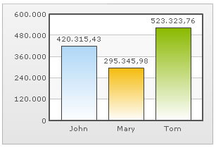

Using formatted input numbers |
In some countries, commas are used as decimal separators and dots as thousand separators. But, if you directly specify such numbers in FusionCharts XML, it will give an error while converting to number. FusionCharts v3 introduces a smart way to let you specify numbers in your own format in XML. Consider the XML below: |
| <chart inThousandSeparator='.' inDecimalSeparator=',' formatNumberScale='0'> <set label='John' value='420.315,43' /> <set label='Mary' value='295.345,98' /> <set label='Tom' value='523.323,76' /> </chart> |
In this XML, we're providing the numbers in the non-standard convention - i.e., we've used dot as the thousand separator and comma as the decimal separator (as followed in some European countries). Now, to make sure that FusionCharts reads these numbers in the right way, we convey our input decimal and thousand separator characters as under: <chart ... inThousandSeparator='.' inDecimalSeparator=',' ..> This tells FusionCharts that it should treat dot in the input numbers as thousands (instead of normal decimals) and comma as decimals. When you now view this chart, you'll get the following output: |
| You can see that FusionCharts has interpreted the numbers properly and automatically converted the numbers into the standard format. If you want to output the number again in the non-conventional format, you can use the following XML: |
<chart inThousandSeparator='.' inDecimalSeparator=',' thousandSeparator='.' decimalSeparator=',' formatNumberScale='0'> |
| In the above XML we're specifying custom characters for both input and output formats. When you now see the chart, you'll get something as under: |
|  |